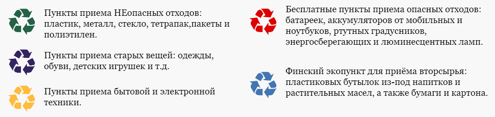
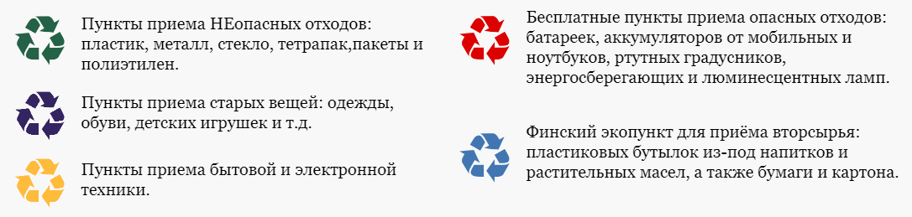

Куда сдать второсырьё?
Надеюсь, каждый осознаёт важность утитлизации отходов. Это позволяет уменьшить количество мусора на свалках, а также благодаря этому уменьшается необходимость использования нового сырья. Так, например, вместо вырубания новых деревьев для изготовления бумаги можно использовать макулатуру.О состоянии экологии в Ижевске вы можете посмотерть здесь.
 
Один из способов уменьшить производство мусора - заменять одноразовый пластик на многоразовые вещи:

Один из способов уменьшить производство мусора - заменять одноразовый пластик на многоразовые вещи:
- Заменить пакет на тканевую сумку;
- Купить ланч-бокс вместо одноразовых контейнеров;
- Использовать тканевые мешочки вместо фасовочных пакетов;
- Купить многоразовую кружку для кофе;
- Купить многоразовую пластиковую или металлическую бутылку для воды;
- Купить многоразовую металлическую трубочку